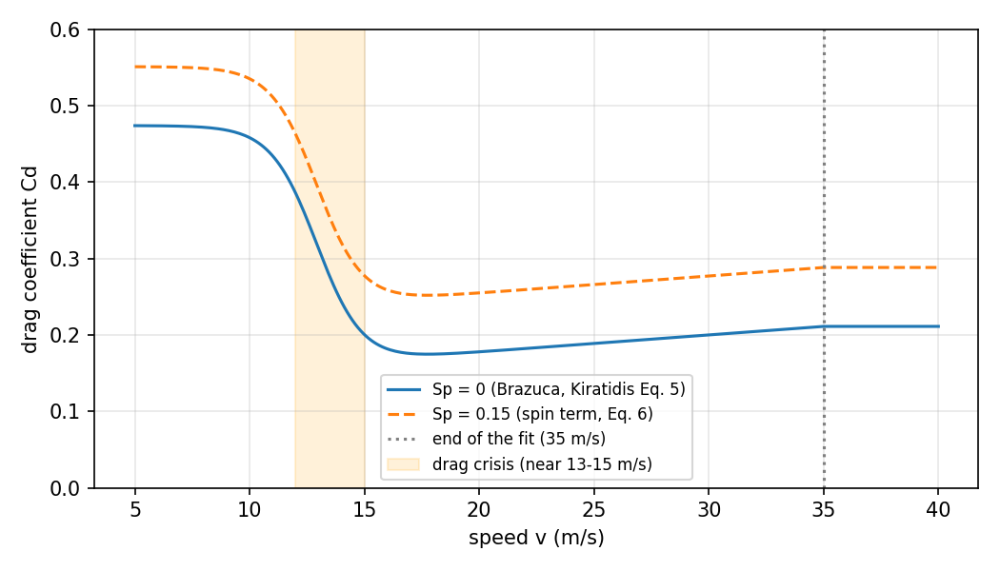
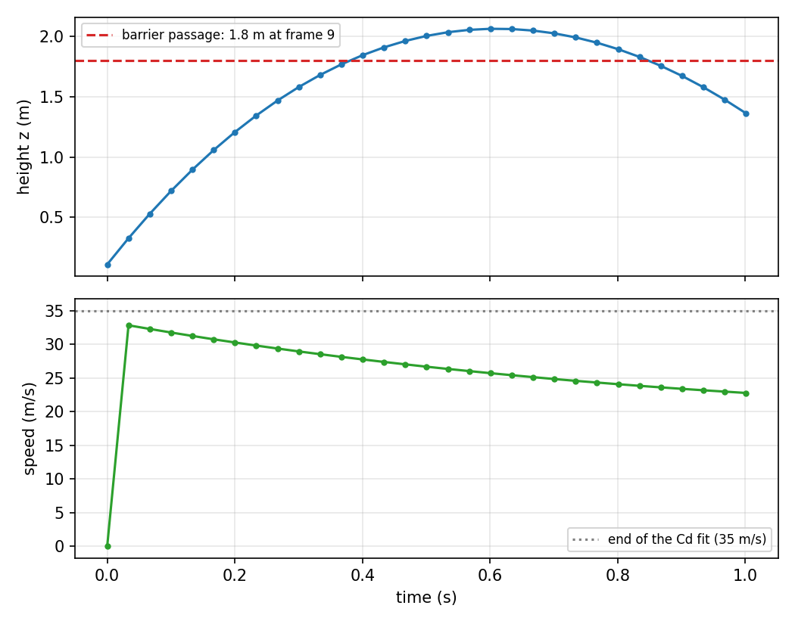
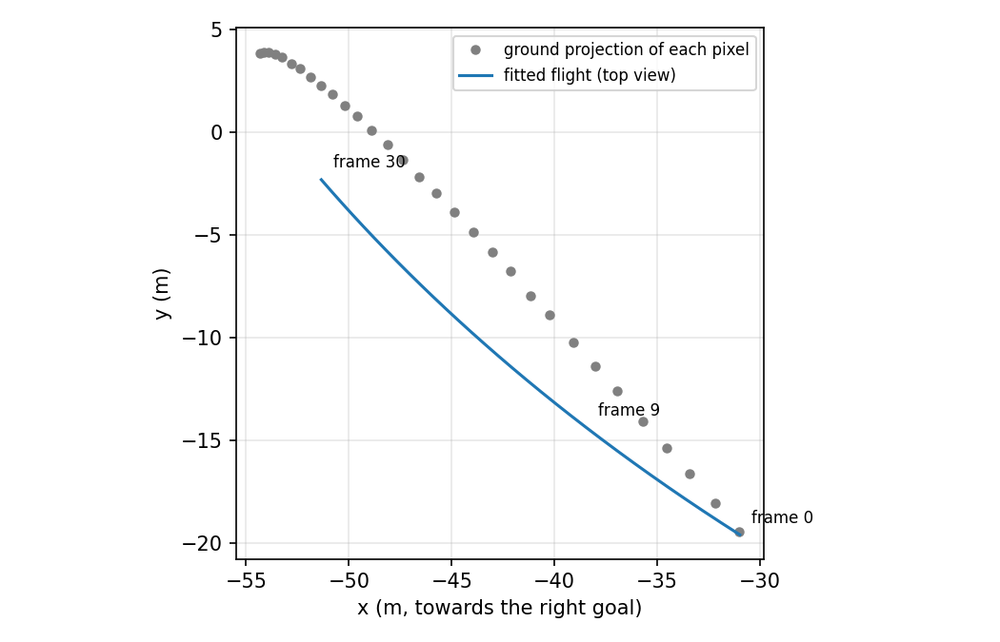
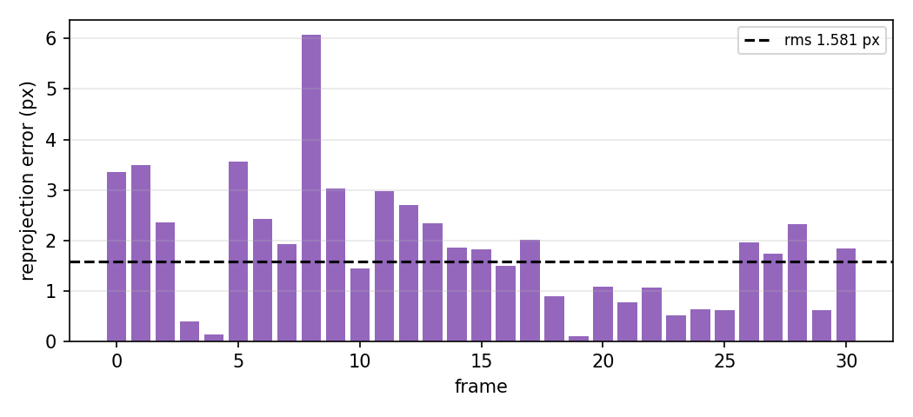

Drag, the Magnus effect, and the trajectory of a hand-corrected ball, with spin inferred from pixels. vailá, version 0.4.11, 26 October 2026.
3D reconstruction of a hand-corrected ball needs a physically plausible trajectory. A soccer ball is not a particle on the ground: it leaves the foot, rises, loses speed to the air, and curves because of spin. This document explains the model FreeKiki uses, where the numbers come from, how it is fitted to the markings, and what still does not match.
In short, the model:
Honest result: on the c1 clip the model reproduces the ball markings with 1.6 px mean error, but the three physical anchors are only met with 0.6 to 1.0 m error. Validation against the published Pelé kick case also failed (about 10 to 12 m error). Details in section 8.
A ball moves through air under three forces: weight, drag (opposite to the motion), and the Magnus force (perpendicular to the motion, caused by rotation).
Drag is the force the air exerts against the motion. For a sphere (the ball) it is:
where ρ is air density (1.2 kg/m³), A is the cross-sectional area (πr², with r = 0.11 m), and Cd is the drag coefficient, which is not constant: it depends on speed and ball roughness.
The Reynolds number measures the ratio of inertia to air viscosity:
For a soccer ball, Re lies between 10⁵ and 5·10⁵ in play: the range where drag changes regime.
Below a critical Reynolds number (about 2 to 3 · 10⁵ for a soccer ball, after Asai & Seo, 2013), the air boundary layer is laminar and separates early from the ball, leaving a wide wake: Cd ≈ 0.47. Above the critical value the boundary layer becomes turbulent, separates later, and the wake shrinks: Cd falls to 0.12–0.15. That drop is the drag crisis. Seams and panels bring the transition forward, so Brazuca and other panelled balls have crises at different speeds.

freekiki_physics.drag_coefficient. The orange band marks the crisis.A spinning ball drags air on one side and slows it on the other. The pressure difference yields a force perpendicular to velocity and to the spin axis:
The coefficient C_L grows with the spin parameter Sp = r · |ω| / v (ω in rad/s). We use the Kiratidis & Leinweber (2018, Eq. 8) fit: C_L = 1.15 · Sp0.83, without the drag factor of Eq. 9 (documented simplification). For a kick at 6 revolutions per second and 30 m/s, Sp ≈ 0.14 and C_L ≈ 0.22.
Spin also increases drag: Cd += b · Sp with b = 0.514 (Kiratidis Eq. 6, measured on Teamgeist; Brazuca has no own value in that paper).
With z upward, the ball acceleration is:
with g = 9.81 m/s², m = 0.43 kg (Kiratidis) and D = 0.22 m. Integration is numerical (RK45,
scipy.integrate.solve_ivp). Before the kick the ball rests on the ground. From kick time
tk it flies under the equation above.
| quantity | value | source |
|---|---|---|
| air density ρ | 1.2 kg/m³ | Aguiar (UFRJ); Kiratidis |
| viscosity μ | 1.8·10⁻⁵ Pa·s | Aguiar (UFRJ) |
| diameter D, radius r | 0.22 m, 0.11 m | Aguiar; Kiratidis |
| mass m | 0.43 kg | Kiratidis (Asai & Seo give 0.428–0.438 kg) |
| Cd(v), Brazuca | a = 0.4740; vc = 12.92; vs = 1.000; bmin = 0.1657; bmax = 0.2112; vmin = 14.61; vmax = 35.00 m/s | Kiratidis, Table 1 and Eq. 5 |
| spin term in Cd | b = 0.514 | Kiratidis, Eq. 6 (Teamgeist value) |
| C_L(Sp) | 1.15 · Sp0.83 | Kiratidis, Eq. 8 (without drag factor) |
The Cd table goes up to 35 m/s. Above that, the code holds the 35 m/s value and flags the segment in
the report (above_fit_range).
getpixelvideo markings give, for each frame, the ball position in the image (u, v). Each frame has a
DLT3D calibration, a 3×4 matrix P that maps a field point (X, Y, Z) in metres to the image. The fit seeks the physical
trajectory that, projected by P each frame, reproduces the markings.
Fitted parameters (9):
Residuals minimized (scipy.optimize.least_squares):
The fit is repeated with three kick times and three spin starts (zero, and ±6 rps about the vertical axis) to avoid a local minimum. The lowest-cost run wins.
Usage in FreeKiki:
IDs are the players in the clip (person_id in the pose files). Output includes
ball_flight.json with parameters, speeds, and residuals; the ball C3D then carries true height.
Data: 31 frames at 29.97 fps, valid DLT3D on every frame; hand-corrected ball markings.
| quantity | result |
|---|---|
| reprojection error (rms / max) | 1.58 px / 6.08 px (the earlier ballistic fit, no Magnus, with anchors, had 8.7 px) |
| kick time | 0.00 s (lower bound of the interval: the ball leaves the foot at frame 0) |
| inferred spin | 4.9 rps, axis (0.08; −0.04; −1.00): nearly vertical, hence the lateral curve |
| peak speed | 32.8 m/s (inside the Brazuca Cd range) |
| speed at end (frame 30) | 22.8 m/s: 30% drop from drag |
| height at frame 9 | 1.58 m (the barrier asks for 1.8 m) |
| maximum height | 2.07 m |
| anchor errors | foot: 0.63 m; barrier: 0.70 m horizontal and 0.22 m height; keeper: 1.02 m |



With no drag and no Magnus, the simulation matches the analytic oblique-projectile solution (x = vxt, z = vzt − g t²/2) to a maximum error of 6·10⁻¹⁴ m. The integrator is correct.
A trajectory with 5 rps spin was projected through a known camera with 0.5 px noise. The fit recovered every frame’s
position within 0.25 m and the spin within 10%. That test lives in the repository
(tests/test_freekiki_physics.py).
Aguiar’s notes publish the start and end of a kick: from (−5.2; −2.9; 0) m with v = (27.8; −0.4; 8.8) m/s to (54.3; 3.7; 0) m at t = 3.20 s, with spin −6.11 Hz. Simulating with our model:
| setup | error to the published point |
|---|---|
| Brazuca, most favourable spin axis | 12.0 m |
| Aguiar’s own coefficients (Cd = 0.15; CS = 1.25 · Sp) | 9.7 m |
| Brazuca with CS = 1.25 · Sp | 9.9 m |
This validation did not pass (target was 2 m). The integrator is correct (6.1), so the gap comes from elsewhere: axis and spin-sign conventions in Aguiar’s text, how the end point is reported, or a fit specific to the published kick. With the available data those causes could not be separated.
Pixels are reproduced within 1.6 px, and speed and spin are of a plausible order. But the three anchors are not satisfied together: the foot is 0.63 m off, the barrier 0.70 m (horizontal), and the keeper 1.02 m. Because the fit weights the 31 pixel frames more than the three anchors, it chooses the trajectory that matches the markings. That points to at least one of three problems: this clip’s DLT3D (scale or camera pose, about 1 m), the frames chosen for the anchors (frame 9 and the last frame), or the players’ field positions. To decide, the clip still needs a visual check with the trajectory overlaid.
Kick time also sits on the bound (0.00 s). At one-frame resolution that is consistent with a kick at frame 0.
Figures come from docs/fisica_bola_figuras.py, which reads the reconstructed folder and does not re-fit.